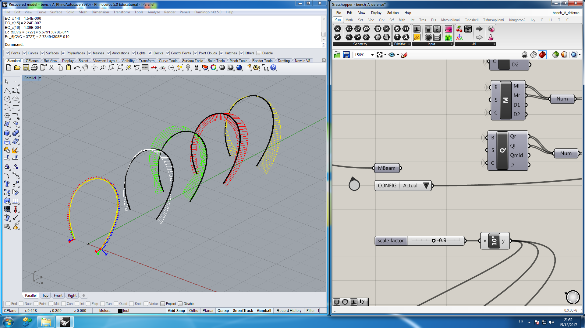
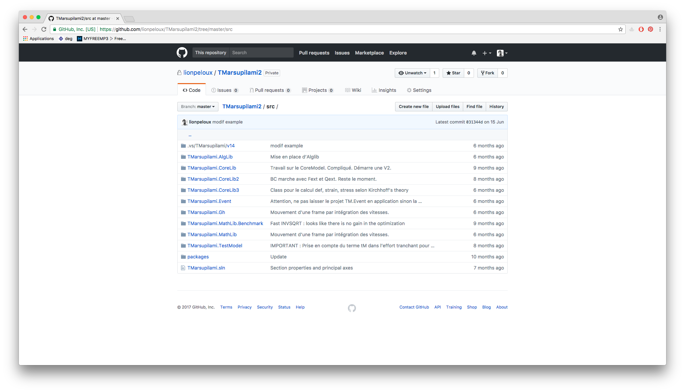
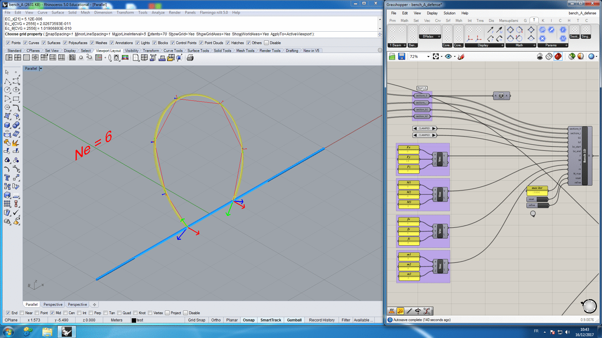
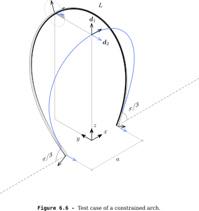
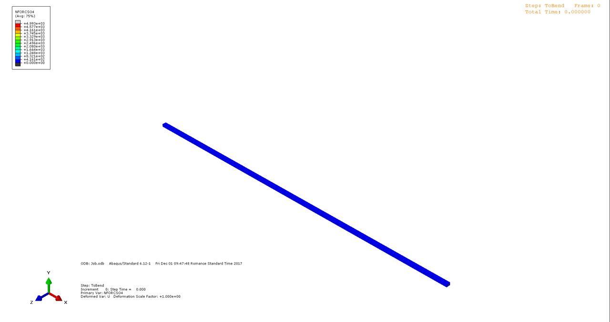
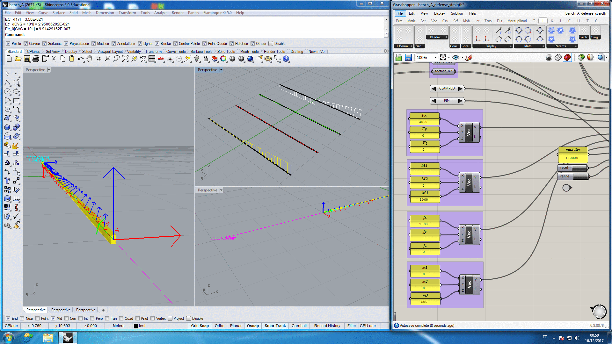
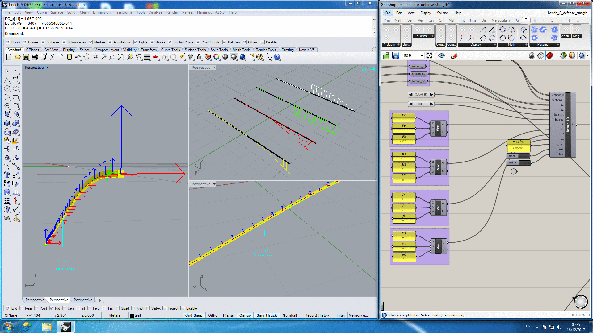
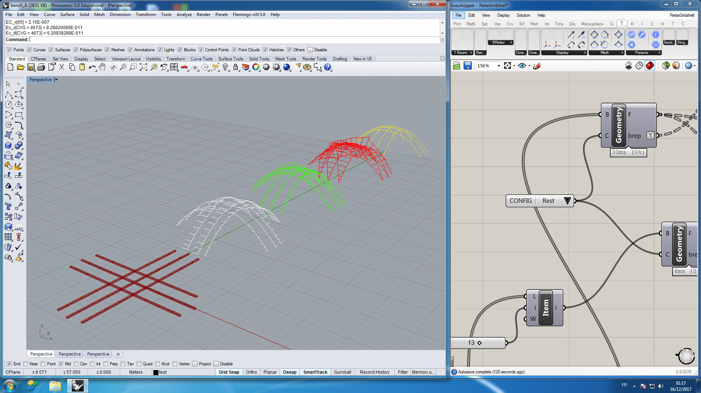

Implementation & test case
- Introduction to the concept
- Design process : overview
- Beam model : variational approach
- Beam model : equilibrium approach
- New discrete beam element
- Implementation & test case
environment
- Rhino : versatile 3D modeler (NURBS)
- Grasshopper : graphical algorithm editor
- Well established (architects & engineers)

Coding Language
- C# is an ECMA standard (top five)
- Garbage collection
- .Net Framework > Open Source .Net Core / Mono
- Portability : Windows, Linux, macOS, ...
- Few existing scientific librairies (C++, Python, Julia)
Architecture : API
- Application Programming Interface (portable)
- Dependence-Free
- Marsupilami.MathLib : Point, Vector, Frame, Centerline
- Marsupilami.CoreLib : Element, Material, Section, Load, Solver
- Marsupilami.Gh : Grasshopper interface

Architecture : CODE
- Object-Oriented Programming > Modularity & Abstraction
- Sequential vs. Event-driven Programming
- Parallel Programing

Test Case
Constrained Arch
- Naturally straight beam with rectangular cross-section $4\times6\,cm$
- $L=10.0\,m\;,\;a = 2.0\,m$
- $E=25\,GPa \;,\; G=10\,GPa \; $
- Discretization (number of edges) : $n=6,12,24,48,96$

Abaqus

Marsupilami
Constrained Arch
- Relative error for apex position (M/A) : 12.6 - 3.2 - 0.8 - 0.2 - 0.0 %
- CPU Time for Marsupilami (ST) : 80 - 160 - 320 - 740 - 1480 ms
- CPU Time for Abaqus (MT) : 4200 - 5400 - 6400 - 6400 - 9700 ms
Other Examples
CLAMPED-PINNED
$F_x=3000\,N \;,\; f_x=1000\,N \;,\; F_y=0/1000\,N \;,\; M_3=1000\,Nm \;,\; m_3=500\,Nm$

CANTILEVER A
$M_2=0/1000/5000/10000/20000/30000/40000\,Nm$

CANTILEVER B
$F_z=-500\,N \;,\; M_1=100\,Nm \;,\; M_3=0/500/1000/2000/30000\,Nm$

GRIDSHELL B
3x3 gridshell

Conclusion
- New 4-DOFs & 3-noded discrete beam element
- Marsupilami : formfinding of bending-active structures
- Validation against Abaqus shows very good results
- Enhance the analysis toolchain for the design of elastic gridshells
Perspectives
- Marsupilami is still in progress > collaborative development
- Computations are fast but not realtime
- Not limited to the design of elastic gridshells
- Grishell : research > commercial effort